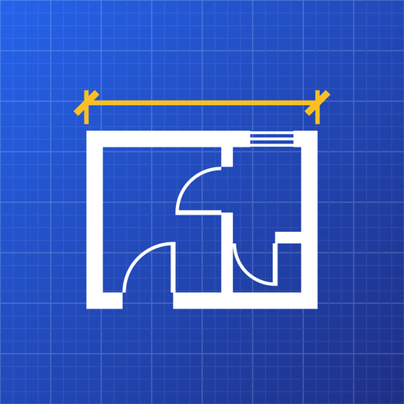

Política de privacidad
Visor CAD
Español · English
Última actualización: 21 de noviembre de 2026
Esta política explica qué información maneja la aplicación para Android Visor CAD (en inglés, CAD Viewer; la “App”), desarrollada por Oscar Ramírez (RamzLabs), Guadalajara, Jalisco, México (el “Desarrollador”), y cómo se utiliza.
- Los planos que abres se leen y se dibujan solo en tu teléfono. No se suben a internet y el Desarrollador no los recibe ni los puede ver.
- La App no requiere crear una cuenta.
- La App no pide permiso para leer tu almacenamiento: solo abre los archivos que tú eliges.
- La App muestra anuncios de Google AdMob, que recopila ciertos datos del dispositivo (como el ID de publicidad) para mostrar y medir anuncios.
1. Planos que abres
La App abre planos DWG y DXF que tú eliges con el selector de archivos de Android o que abres con Abrir con desde otra aplicación (por ejemplo, un explorador de archivos, el correo o una app de mensajería). La App solo puede leer el archivo que eliges en ese momento.
Para mostrarte la lista de Recientes, la App guarda en su almacenamiento privado:
- una copia de cada plano que abres (los archivos que llegan de otras apps a veces solo se pueden leer una vez);
- una miniatura del plano, su nombre, tamaño y fecha en que lo abriste;
- las capas que encendiste o apagaste en ese plano.
La App conserva hasta 40 planos recientes y borra automáticamente los más antiguos. Esta información no se envía a servidores del Desarrollador ni a terceros y no se usa para publicidad. La App no modifica ni borra el archivo original.
Los planos pueden contener datos de personas (por ejemplo, nombres, firmas o domicilios en el cuadro de datos). Si abres planos de otras personas, eres responsable de contar con su autorización y de tratarlos conforme a la legislación aplicable, incluida la Ley Federal de Protección de Datos Personales en Posesión de los Particulares.
2. Compartir un plano o exportarlo a PDF
Si tocas Compartir archivo en un plano de la lista de recientes, se abre el menú para compartir de Android y tú eliges la aplicación o la persona que lo recibe.
Si exportas un plano a PDF, la App crea el PDF dentro de tu teléfono. Al tocar Guardar, eliges con el selector de archivos de Android dónde se guarda; al tocar Compartir, se abre el menú para compartir de Android (desde ahí también puedes imprimirlo) y tú eliges la aplicación o la persona que lo recibe.
La App no envía los planos ni los PDF a ningún otro lugar.
3. Preferencias
La App guarda en tu teléfono tus preferencias, como el idioma, el color de fondo y las opciones de la vista 3D. No salen del dispositivo.
4. Publicidad (Google AdMob)
La App usa Google AdMob para mostrar anuncios. El SDK de Google Mobile Ads puede recopilar y procesar automáticamente:
- El ID de publicidad de Android.
- La dirección IP y la ubicación aproximada derivada de ella.
- Información del dispositivo y del sistema (modelo, versión de Android, idioma).
- Interacciones con los anuncios y datos de diagnóstico y rendimiento.
Google usa estos datos para mostrar anuncios, medir su rendimiento, prevenir fraudes y, cuando lo permites, personalizar la publicidad. Más información:
Los planos que abres, sus nombres y su contenido no se comparten con anunciantes ni se usan para publicidad.
5. Consentimiento y control de los anuncios
- Si te encuentras en el Espacio Económico Europeo, el Reino Unido o Suiza, la App te pedirá tu consentimiento antes de usar tus datos para anuncios personalizados. Puedes cambiar tu elección en cualquier momento desde Inicio → menú (⋮) → Privacidad de anuncios.
- En cualquier país puedes restablecer o eliminar tu ID de publicidad, o desactivar la personalización de anuncios, en Ajustes de Android → Google → Anuncios (o Ajustes → Seguridad y privacidad → Otros ajustes de privacidad → Anuncios).
6. Permisos de la App
- Internet y estado de la red: solo para cargar anuncios. Los planos se abren sin conexión y no se envían por internet.
- ID de publicidad: lo usa AdMob según lo descrito arriba.
La App no pide permiso para leer tus archivos, fotos o almacenamiento, y no lee tus contactos, ubicación, llamadas ni mensajes.
7. Conservación y eliminación de datos
Las copias de los planos, sus miniaturas, los PDF temporales que se crean para compartir y tus preferencias permanecen en tu dispositivo hasta que quitas un plano de la lista (menú (⋮) del plano → Quitar de recientes), hasta que la App lo borra por ser de los más antiguos, hasta que borras los datos de la App desde los ajustes de Android o hasta que la desinstalas. Tus archivos originales no se ven afectados. Como el Desarrollador no guarda copias, no puede recuperar tu información si se pierde. Para los datos que trata Google, consulta la política de Google.
8. Seguridad
Las copias de los planos se guardan en el almacenamiento privado de la App, al que otras aplicaciones no pueden acceder. Te recomendamos proteger tu teléfono con bloqueo de pantalla, sobre todo si abres planos confidenciales.
9. Menores de edad
La App es una herramienta para ver planos técnicos dirigida a adultos y no está diseñada para menores de 13 años. No recopilamos de forma intencional información de menores.
10. Cambios a esta política
Podemos actualizar esta política. Publicaremos la versión vigente en esta misma página con su fecha de actualización.
11. Contacto
Si tienes preguntas sobre esta política o sobre tus datos, escribe a oscarivanramirezruiz96@gmail.com.
Privacy Policy
CAD Viewer (Visor CAD)
Español · English
Last updated: November 21, 2026
This policy explains what information the Android app CAD Viewer (in Spanish, Visor CAD; the “App”), developed by Oscar Ramírez (RamzLabs), Guadalajara, Jalisco, Mexico (the “Developer”), handles and how it is used.
- The drawings you open are read and rendered only on your phone. They are not uploaded to the internet, and the Developer does not receive them and cannot see them.
- The App does not require an account.
- The App does not ask for permission to read your storage: it only opens the files you choose.
- The App shows Google AdMob ads, which collect certain device data (such as the advertising ID) to serve and measure ads.
1. Drawings you open
The App opens DWG and DXF drawings that you pick with the Android file picker or open with Open with from another app (for example, a file manager, email or a messaging app). The App can only read the file you choose at that moment.
To show you the Recent list, the App stores in its private storage:
- a copy of each drawing you open (files that come from other apps can sometimes be read only once);
- a thumbnail of the drawing, its name, size and the date you opened it;
- the layers you turned on or off in that drawing.
The App keeps up to 40 recent drawings and automatically deletes the oldest ones. This information is not sent to the Developer's servers or to third parties and is not used for advertising. The App does not modify or delete the original file.
Drawings may contain data about people (for example, names, signatures or addresses in the title block). If you open other people's drawings, you are responsible for having their permission and for handling them in accordance with the applicable law.
2. Sharing a drawing or exporting it to PDF
If you tap Share file on a drawing in the recent list, the Android share menu opens and you choose the app or person who receives it.
If you export a drawing to PDF, the App creates the PDF on your phone. Tapping Save lets you choose where to save it with the Android file picker; tapping Share opens the Android share menu (where you can also print it) and you choose the app or person who receives it.
The App does not send drawings or PDFs anywhere else.
3. Preferences
The App stores your preferences on your phone, such as the language, the background color and the 3D view options. They do not leave the device.
4. Advertising (Google AdMob)
The App uses Google AdMob to show ads. The Google Mobile Ads SDK may automatically collect and process:
- The Android advertising ID.
- The IP address and the approximate location derived from it.
- Device and system information (model, Android version, language).
- Ad interactions and diagnostic and performance data.
Google uses this data to show ads, measure their performance, prevent fraud and, when you allow it, personalize advertising. More information:
The drawings you open, their names and their content are not shared with advertisers or used for advertising.
5. Ad consent and controls
- If you are in the European Economic Area, the United Kingdom or Switzerland, the App will ask for your consent before using your data for personalized ads. You can change your choice at any time from Home → menu (⋮) → Ad privacy.
- In any country you can reset or delete your advertising ID, or turn off ad personalization, in Android Settings → Google → Ads (or Settings → Security & privacy → More privacy settings → Ads).
6. App permissions
- Internet and network state: only to load ads. Drawings open offline and are not sent over the internet.
- Advertising ID: used by AdMob as described above.
The App does not ask for permission to read your files, photos or storage, and does not read your contacts, location, calls or messages.
7. Data retention and deletion
Drawing copies, their thumbnails, the temporary PDFs created for sharing and your preferences stay on your device until you remove a drawing from the list (drawing's menu (⋮) → Remove from recent), until the App deletes it as one of the oldest, until you clear the App's data in Android settings, or until you uninstall it. Your original files are not affected. Because the Developer keeps no copies, it cannot recover your information if it is lost. For data processed by Google, see Google's policy.
8. Security
Drawing copies are stored in the App's private storage, which other apps cannot access. We recommend protecting your phone with a screen lock, especially if you open confidential drawings.
9. Children
The App is a tool for viewing technical drawings intended for adults and is not designed for children under 13. We do not knowingly collect information from children.
10. Changes to this policy
We may update this policy. The current version will be posted on this page with its update date.
11. Contact
If you have questions about this policy or your data, write to oscarivanramirezruiz96@gmail.com.